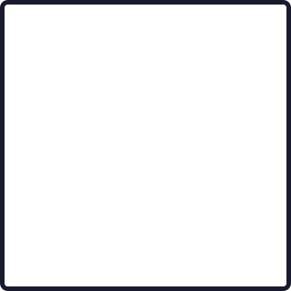
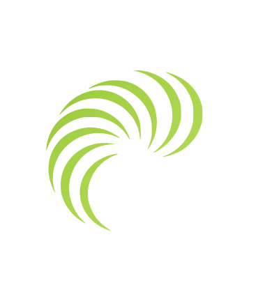

3 элемента · HTML + CSS позиционирование · анимация волны + вращение вихря


ЗЕвС
Если нужно подвинуть элементы — ты сама можешь!
1. Правой кнопкой в браузере → «Просмотреть код» (или F12) → откроется DevTools. 2. Слева в инспекторе найди <div class="vortex-wrap"> или <div class="text">. 3. Справа в панели «Styles» меняй числа в реальном времени:
• left: -15% — двигает вихрь влево-вправо
• top: 18% — двигает вихрь вверх-вниз
• width: 65% — меняет размер вихря
• transform: rotate(-5deg) — меняет угол поворота 4. Для текста то же самое — left, top, font-size.
Когда идеально настроишь — скажи мне итоговые значения, я зашью их в файл.